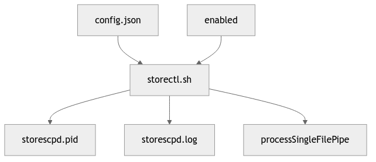

The storectl.sh script is a system service controller for managing DICOM storage operations. It starts/stops the storescpFIONA daemon which receives DICOM files over the network and processes them through a named pipe system.
Input/Output File Dependencies
File Descriptions:
config.json- Main configuration file containing DATADIR, DICOMPORT, and project settingsenabled- Control file to enable/disable the service (first character: 0=disabled, 1=enabled)storectl.sh- Main control script for managing the DICOM storage daemonstorescpd.pid- Process ID file for tracking the running daemonstorescpd.log- Log file recording daemon activities and errorsprocessSingleFilePipe- Named pipe for communicating file reception events to processing system
Data Flow Dependencies

Data Flow Components:
DICOMNetwork- External DICOM devices sending medical imaging data over networkstorescpFIONA- DICOM storage daemon that receives and processes incoming DICOM filesreceiveSingleFile.sh- Script executed for each received DICOM file to handle initial processingprocessSingleFilePipe- Named pipe used for inter-process communication between componentsprocessSingleFile.py- Python script that processes DICOM file metadata and organizes dataArchiveDirectory- File system location where DICOM files are permanently stored
Directories:
${DATADIR}/site/archive- DICOM file storage location${DATADIR}/site/.arrived- Temporary arrival directory${SERVERDIR}/.pids/- PID file storage${SERVERDIR}/logs/- Log file directory
storectl.sh
filename: storescpd
purpose: start storescp server for processing user at boot time to receive data | Move files to project specific file system
This system service will fail if a control file /data/enabled exists and its first character is a “0”.
(Hauke Bartsch)